تمت ترجمة هذه الصفحة تلقائيًا. إذا بدا شيء غير صحيح، يرجى إخباري.
نصائح تقنية مجانية لبريدلينغتون والمنطقة الشرقية
مساعدة بسيطة وواضحة باللغة العادية للهواتف والحواسيب والبقاء بأمان عبر الإنترنت. مجاني، بدون أي شيء عليك التسجيل فيه.
أحدث النصائح
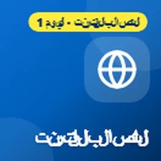
Getting online makes everyday life easier
This week is Get Online Week, a national campaign to help more people feel confident using the internet. Being online has become part of everyday life,...
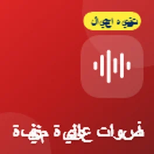
It sounds like your family. It might not be.
I wanted to share a warning about a scam that's becoming more common: phone calls using a copy of a family member's voice.
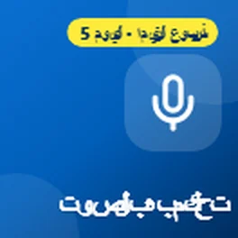
Control your phone with your voice
It's day five of National Braille Week, and today I wanted to share how you can control your phone using just your voice.
عسر التنسيق: مساعدة البالغين والطلاب
إنه اليوم الأخير لأسبوع التوعية بعسر التنسيق، وأردت أن أنهيه بمشاركة بعض الدعم للبالغين والطلاب، لأن عسر التنسيق لا يتوقف...

هل لديك قلادة أو جهاز إنذار للسقوط؟ تحقق الآن
أردت أن أشارك شيئاً مهماً لأي شخص لديه جهاز إنذار شخصي، مثل قلادة أو جهاز إنذار للسقوط، يعمل عبر خط الهاتف المنزلي الخاص به.
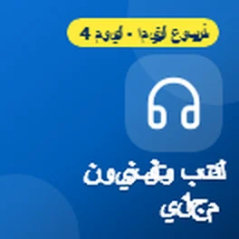
كتب مجانية وتلفزيون يمكنك الاستماع إليه
إنه اليوم الرابع من الأسبوع الوطني للبريل، ونصائح اليوم تدور حول الكتب والراديو والتلفزيون الذي يمكنك الاستمتاع به بالاستماع إليه.
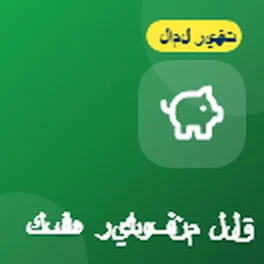
أدوات مجانية لخفض فواتير الإنترنت والهاتف الخاصة بك
اليوم هو اليوم العالمي للقضاء على الفقر، لذلك أردت مشاركة بعض الأدوات المجانية التي يمكن أن تساعدك في خفض تكلفة الإنترنت الخاصة بك...
عسر التنسيق (Dyspraxia): تكنولوجيا للخروج والتنقل
إنه اليوم السادس من الأسبوع التوعوي بعسر التنسيق، واليوم أردت مشاركة بعض التكنولوجيا التي تساعد في الخروج والتنقل.
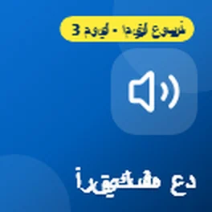
دع هاتفك يقرأ لك
إنه اليوم الثالث من الأسبوع الوطني للبريل، واليوم أردت مشاركة بعض الطرق المجانية لجعل هاتفك أو جهاز الكمبيوتر يقرأ الأشياء بصوت عالٍ لك.
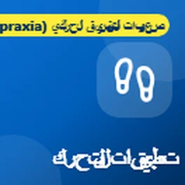
عسر التنسيق (Dyspraxia): تطبيقات للتحرك
إنه اليوم الخامس من الأسبوع التوعوي بعسر التنسيق، ونصائح اليوم كلها تدور حول التحرك.
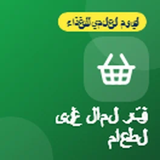
وفر المال على الطعام باستخدام هاتفك
اليوم هو اليوم العالمي للطعام، لذلك أردت أن أشارككم بعض التطبيقات المجانية التي يمكن أن تساعدكم في توفير المال على الطعام ووقف هدر الطعام الجيد.
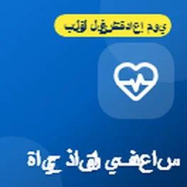
تطبيقات مجانية يمكن أن تساعدك في توفير حياة
اليوم هو يوم إعادة إحياء القلب، لذلك أردت أن أشارككم بعض التطبيقات والمواقع المجانية التي يمكن أن تساعدكم في تعلم الإنعاش القلبي الرئوي (CPR) والاستعداد للمساعدة إذا توقف قلب شخص ما.
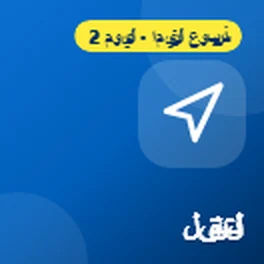
التنقل مع فقدان البصر
إنه اليوم الثاني من الأسبوع العالمي للخط الناقص (Braille)، واليوم هو أيضاً يوم سلامة عصا المشي البيضاء، لذلك أردت أن أشارككم بعض التطبيقات المجانية التي تساعد الأشخاص الذين يعانون من فقدان البصر...
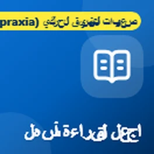
عسر الكتابة (Dyspraxia): أدوات تجعل القراءة أسهل
إنه اليوم الرابع من الأسبوع التوعوي بعسر الكتابة، واليوم أردت أن أشارككم بعض الأدوات المجانية التي تجعل القراءة أسهل.

هل تلقيت رسالة نصية عن طرد مفقود؟
أردت أن أشارككم تحذيراً بشأن رسائل نصية مزيفة حول توصيل الطرود، لأنها واحدة من أكثر عمليات الاحتيال شيوعاً في الوقت الحالي.
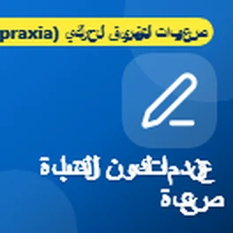
عسر الكتابة (Dyspraxia): عندما تكون الكتابة صعبة
إنه اليوم الثالث من الأسبوع التوعوي بعسر الكتابة، ونصائح اليوم لأي شخص يجد الكتابة صعبة.
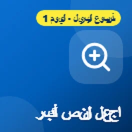
هل تجد صعوبة في قراءة هاتفك؟
هذا الأسبوع هو الأسبوع العالمي للخط الناقص (Braille)، لذلك أردت أن أشارككم بعض الميزات المجانية على هاتفك التي يمكن أن تحدث فرقاً كبيراً إذا لم تكن رؤيتك كما...

هل لديك هاتف أو حاسوب محمول قديم في الدرج؟
اليوم هو اليوم العالمي لإلكترونيات النفايات، وهو تذكير جيد بجميع تلك الهواتف والأجهزة اللوحية والحواسيب المحمولة القديمة التي ترقد في الدرج. معظمنا لديه...
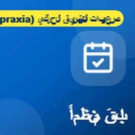
عسر التنسيق (Dyspraxia): أدوات للبقاء منظمًا
إنه اليوم الثاني من الأسبوع التوعوي بعسر التنسيق، واليوم أردت أن أشارك بعض الأدوات المجانية التي تساعد في البقاء منظمًا.

قد يساعدك هاتفك في حالة الطوارئ
اليوم هو اليوم العالمي لتقليل مخاطر الكوارث، لذلك أردت أن أشارك بعض الميزات في هاتفك التي يمكن أن تساعد حقًا في حالة الطوارئ....
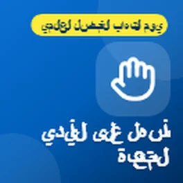
أصابع مؤلمة؟ دع هاتفك وحاسوبك المحمول يقوم بالعمل
اليوم هو اليوم العالمي لالتهاب المفاصل، لذلك أردت أن أشارك بعض الميزات في هاتفك وحاسوبك المحمول التي يمكن أن تجعل الحياة أسهل بكثير إذا كانت لديك...
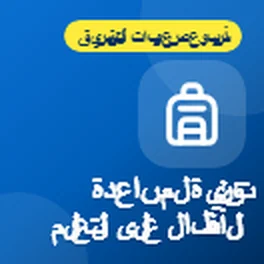
التكنولوجيا التي تساعد الأطفال على التعلم، لا تعتمد عليها
هذا الأسبوع هو الأسبوع التوعوي بعسر التنسيق، لذلك أردت أن أشارك بعض الطرق التي يمكن للتكنولوجيا من خلالها مساعدة الأطفال الذين يعانون من عسر التنسيق. الفكرة هي استخدام التكنولوجيا لمساعدهم في...
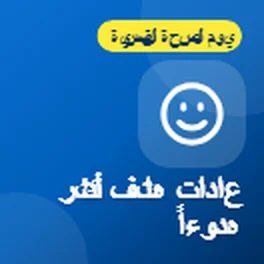
اجعل هاتفك يعمل من أجل رفاهيتك
كان اليوم العالمي للصحة العقلية في 10 أكتوبر، لذلك أردت أن أشارك بعض الأشياء البسيطة التي يمكن لهاتفك القيام بها بالفعل لمساعدتك على الشعور بهدوء أكبر و...
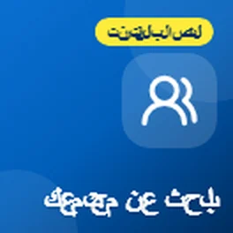
مهما كنت تحبه، هناك مجتمع له
أردت أن أشارك شيئًا لا يدركه الكثير من الناس أنه موجود.

إعلانات تظهر فجأة؟
متابعة لمنشور حول الإعلانات المنبثقة المخيفة، إليك ما يجب فعله إذا استمرت الإعلانات في الظهور على هاتفك الأندرويد حتى عندما لا تستخدم أي تطبيق.

إعلان منبثق مخيف على هاتفك؟ إنه مجرد إعلان
أردت مشاركة نصيحة حول تلك الإعلانات المنبثقة المخيفة التي تظهر أحيانا على الهواتف.
هل نظام الملاحة عبر الأقمار الصناعية الخاص بك قديم؟
إليك نصيحة سريعة لأي شخص لا يزال يستخدم نظام الملاحة عبر الأقمار الصناعية في السيارة.
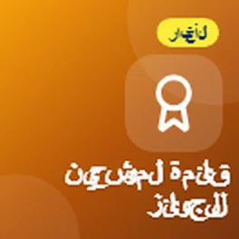
تم اختياري لجائزة Time2Volunteer Awards 2026
أردت مشاركة بعض الأخبار. لقد تم اختياري مؤخراً لجائزة Time2Volunteer Awards 2026 مقابل العمل التطوعي الذي أقوم به مع دعم تقني محلي...
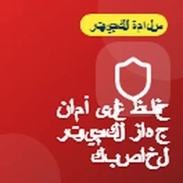
حقائق بسيطة للحفاظ على حاسوبك آمناً
أردت مشاركة بعض النصائح حول الحفاظ على حاسوبك آمناً، لأن الكثير من الناس ينتهي بهم الأمر بدفع ثمن برنامج مكافحة الفيروسات الذي لا يحتاجونه بالفعل.
ما هو رمز الاستجابة السريعة (QR code)؟
أردت فقط مشاركة نصيحة سريعة حول رموز الاستجابة السريعة (QR codes).
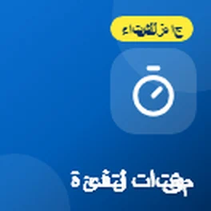
تحقق من مؤقت التدفئة والمياه الساخنة لديك
مع اقتراب الطقس البارد، الآن هو الوقت المناسب للتحقق من مؤقت التدفئة والمياه الساخنة لديك.
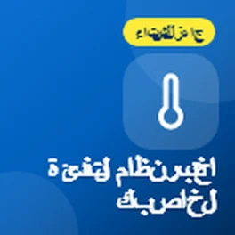
اختبر التدفئة قبل الشتاء
مع اقتراب الشتاء، الآن هو الوقت المناسب لاختبار التدفئة لديك، خاصة إذا لم يتم استخدامها كثيراً هذا العام.
تصفح النصائح حسب الموضوع
- Scams and staying safe (5)
- Health and wellbeing (15)
- المال (2)
- Getting online and staying connected (3)
- الأخبار (1)
- تقنية يومية (6)
ما يقوله الناس
شكرًا جزيلًا يا سيدي
نعم، مفيدة بالتأكيد، شكرًا. سأشاركها مع كل من أظن أنه سيستفيد من نصائحك 😃
مفيدة، شكرًا
احصل على نصائح جديدة عبر البريد الإلكتروني
رسالة قصيرة عندما أنشر نصيحة جديدة. مجانًا، ويمكنك إيقافها في أي وقت.
ستصلك رسالة للتأكيد. تُرسل الرسائل عبر follow.it، وفي كل رسالة رابط لإلغاء الاشتراك.